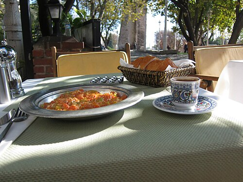
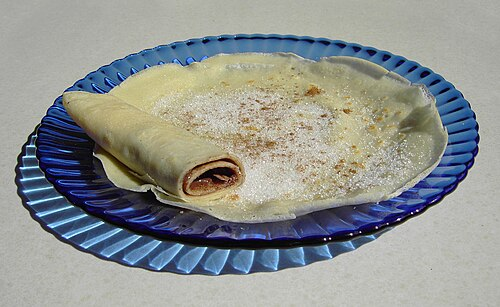
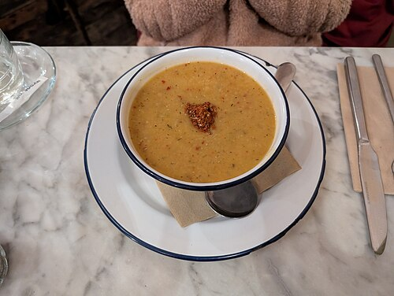
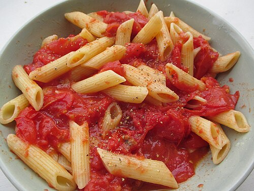
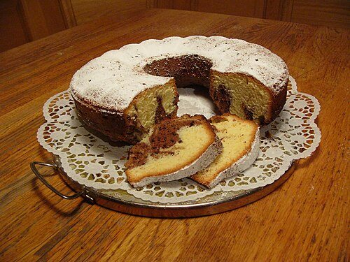

Tarifler
| Tarif | Kategori | Süre | Kişi |
|---|---|---|---|
| Menemen | Kahvaltı | 15 dakika | 2 |
| Krep | Kahvaltı | 20 dakika | 3 |
| Mercimek Çorbası | Çorba | 40 dakika | 4 |
| Domatesli Makarna | Ana yemek | 20 dakika | 3 |
| Mermer Kek | Tatlı | 50 dakika | 8 |
Menemen

Malzemeler
- 2 yumurta
- 2 domates
- 1 yeşil biber
- 1 yemek kaşığı sıvı yağ
- Tuz
Hazırlanışı
- Biberi doğrayıp yağda kavur.
- Domatesleri doğrayıp ekle ve biraz pişir.
- Yumurtaları kırıp karıştır.
- Tuzunu ekleyip birkaç dakika daha pişir.
Krep

Malzemeler
- 2 yumurta
- 1 su bardağı süt
- 1 su bardağı un
- 1 yemek kaşığı sıvı yağ
- Bir tutam tuz
Hazırlanışı
- Yumurta, süt, un, yağ ve tuzu bir kapta çırp.
- Tavayı ısıtıp biraz yağla.
- Tavaya bir kepçe hamur döküp tavayı çevirerek yay.
- Altı kızarınca çevir ve diğer tarafını da pişir.
- İstersen peynir ya da reçel koyup sararak servis et.
Mercimek Çorbası

Malzemeler
- 1 su bardağı kırmızı mercimek
- 1 soğan
- 1 havuç
- 5 su bardağı su
- Tuz
Hazırlanışı
- Mercimeği güzelce yıka.
- Soğanı ve havucu doğra.
- Hepsini tencereye alıp suyu ekle.
- Mercimekler yumuşayana kadar pişir.
- Tuzunu ekleyip blenderdan geçir ve servis et.
Domatesli Makarna

Malzemeler
- 1 paket makarna
- 2 domates
- 1 yemek kaşığı domates salçası
- 2 yemek kaşığı sıvı yağ
- Tuz, karabiber
Hazırlanışı
- Makarnayı tuzlu kaynar suda haşla ve süz.
- Domatesleri rendele.
- Tavada yağı ısıtıp salçayı biraz kavur.
- Domatesleri ekleyip sos koyulaşana kadar pişir.
- Makarnayı sosla karıştır, tuz ve karabiber ekleyip servis et.
Mermer Kek

Malzemeler
- 3 yumurta
- 1 su bardağı şeker
- 1 su bardağı süt
- Yarım su bardağı sıvı yağ
- 2,5 su bardağı un
- 1 paket kabartma tozu
- 2 yemek kaşığı kakao
Hazırlanışı
- Yumurta ve şekeri köpürene kadar çırp.
- Süt ve yağı ekleyip karıştır.
- Un ve kabartma tozunu ekleyip pürüzsüz bir hamur yap.
- Hamurun yarısını ayırıp içine kakaoyu karıştır.
- İki hamuru yağlanmış kalıba sırayla dök.
- 180 derece fırında 40 dakika pişir.